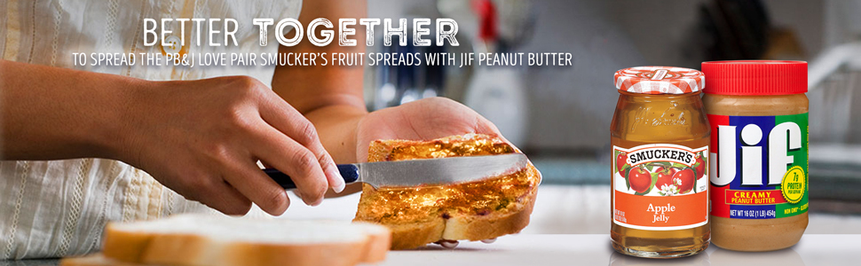

Peanut Butter and Apple Jelly Sandwich

Description
Everybody always underrates the comfort that a PB&J can only deliver. This variation uses apple instead of grape jelly and it is by far my favorite late night snack. Always make two!
Prep time:5 minutes. Cook time:5 minutes. Total time:10 minutes.
Ingredients
- Artesano white bread
- JIF Creamy peanut butter
- Smuckers Apple Jelly
Steps
- This is a very simple recipe. Take one slice of bread and smooth some peanut butter over it with a knife to your preference.
- With the other slice, do the same thing, except with the jelly.
- Combine the slices together. Enjoy!
Home